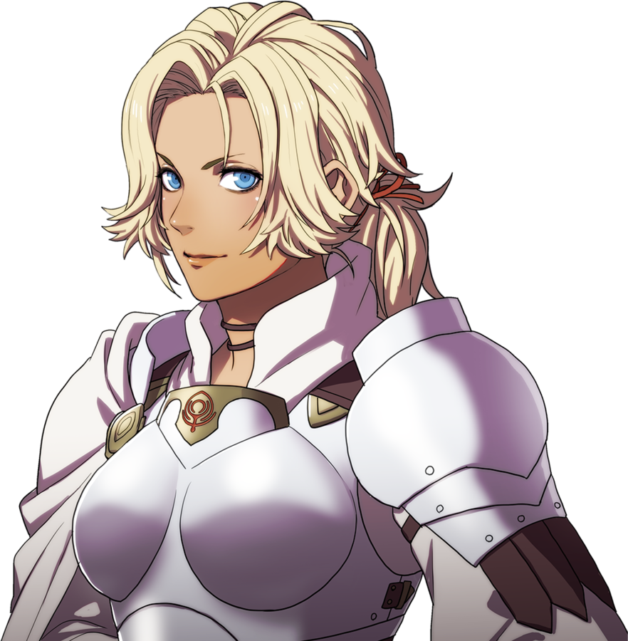

|
Byleth EisnerByleth is the protagonist of Fire Emblem: Three Houses. The player can choose their gender and change the name of the protagonist. |
Jeralt EisnerJeralt is the protagonist father, and he is a famous mercenary. |
SothisSothis is a Goddess who is sort of possess the protagonist, and has seem to forgotten her old memories. |
RheaRhea is the archbishop of the Church of Seiros, and is incharge of the Knights of Seiros. |
SetethSeteth is Rhea's personal aide, and an important member of the Church of Seiros. He cares most about his sister Flayn |
FlaynFlayn is Seteth's sister, and she hates how over protective Seteth is over her. She also loves fish. |
CatherineCatherine is a famous knight who severs Rhea, and she is also known as "Thunder Catherine" due to her might on the battle field. |
 |
Shamir NevrandShamir is a former mercenary and master sniper. She serves for the Knights of Seiros, and is friends with Catherine. |